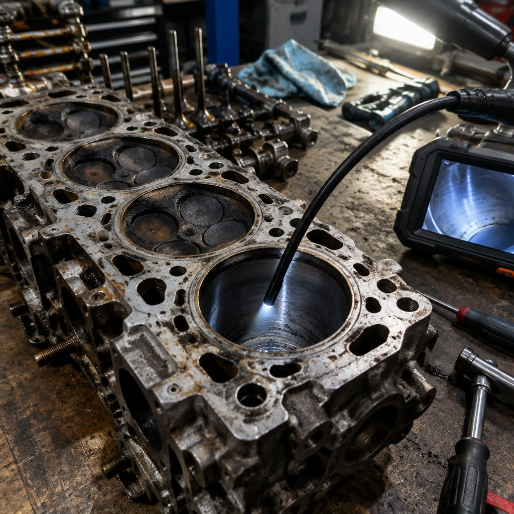

Компьютерная диагностика
Сканер по всем блокам: двигатель, АКПП, ABS, подушки, климат. Читаю ошибки, смотрю живые данные и сохранённые параметры. От 30 р.
Диагностика — это не «прочитать ошибку и стереть». Ошибка говорит, что датчик увидел проблему. Я ищу, почему он её увидел.
Сканер по всем блокам: двигатель, АКПП, ABS, подушки, климат. Читаю ошибки, смотрю живые данные и сохранённые параметры. От 30 р.
Компрессия, давление топлива, наддув, фазы, работа форсунок и катушек. Ищу причину троения, стука и потери мощности. От 50 р.
Форсунки на обратный слив, давление ТНВД, EGR, сажевый фильтр, свечи накала. Дизель требует отдельного подхода и оборудования.
Ошибки, температура и давление масла, адаптации, работа гидроблока. По результату видно: масло, ремонт или замена.
Люфты, шаровые, наконечники, сайлентблоки, стойки, ступицы. На подъёмнике или с домкратом. От 30 р.
Толщина колодок и дисков, состояние шлангов и трубок, работа ABS, ручник, утечки. То, с чем тянуть нельзя.
Аккумулятор и зарядка, генератор, стартер, утечка тока, проводка, датчики, освещение. Ищу, почему «то есть контакт, то нет».
Камера внутрь цилиндра без разборки мотора: задиры, хон, нагар, клапаны, следы перегрева. От 50 р.
Полный круг по узлам перед дальней дорогой: жидкости, ремни, тормоза, шины, подвеска, ошибки.

Без разборки мотораИногда компрессия в норме, ошибок нет, а мотор ест масло. Тогда единственный способ понять причину без разборки — камера в цилиндре.
Цена — от 50 р. Часто делаю вместе с диагностикой двигателя: так картина полная.
Машина на рынке выглядит отлично, пока не скинешь ошибки и не заглянешь под неё. Осмотр перед покупкой — это список того, что продавец не расскажет.
От 100 р. Есть вариант приехать на осмотр вместе с вами или проверить машину по месту продавца.
 Осмотр от 100 р.
Осмотр от 100 р.